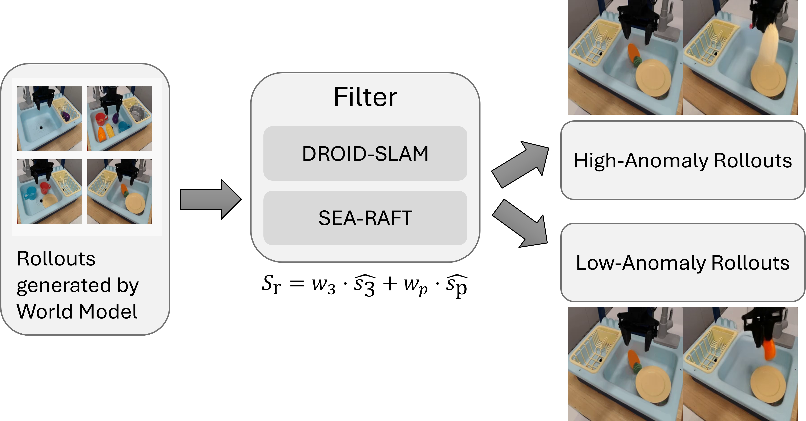
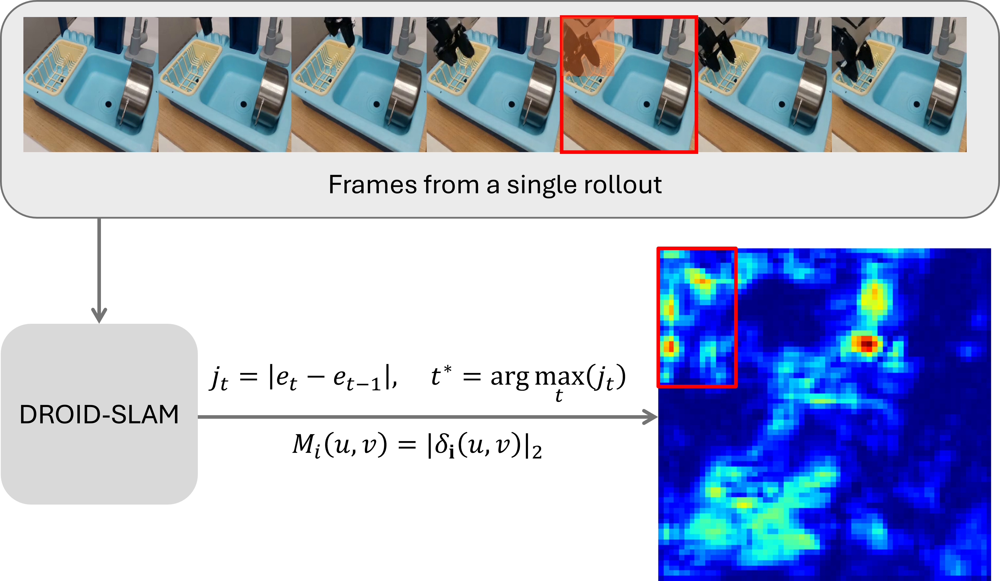

We introduce reference-free measures for evaluating the physical consistency of generated videos, combining relative and absolute approaches to assess fidelity.
Although tools like WorldGym or WorldEval enable robotic simulation via video generation, physical fidelity gaps often prevent these environments from accurately reproducing real-world task success rates of VLA models. Unlike existing evaluation methods, which require costly human voting (Elo) or unavailable ground-truth references (FVD), our approach utilizes DROID-SLAM and SEA-RAFT to quantify physical inconsistencies, motivated by WorldScore.
Videos filtered using our relative consistency assessment show an improvement in task success rates of over 8%, effectively narrowing the simulation-to-reality gap. Furthermore, our absolute assessment enables spatio-temporal localization, providing visualization of when and where physical artifacts occur.

Generated rollouts are evaluated using DROID-SLAM and SEA-RAFT to obtain relative anomaly scores, which enable filtering and ranking of samples based on physical plausibility.

Frames from a single rollout are evaluated using DROID-SLAM to obtain the anomaly heatmap, which shows where and when physical feasibility collapses.